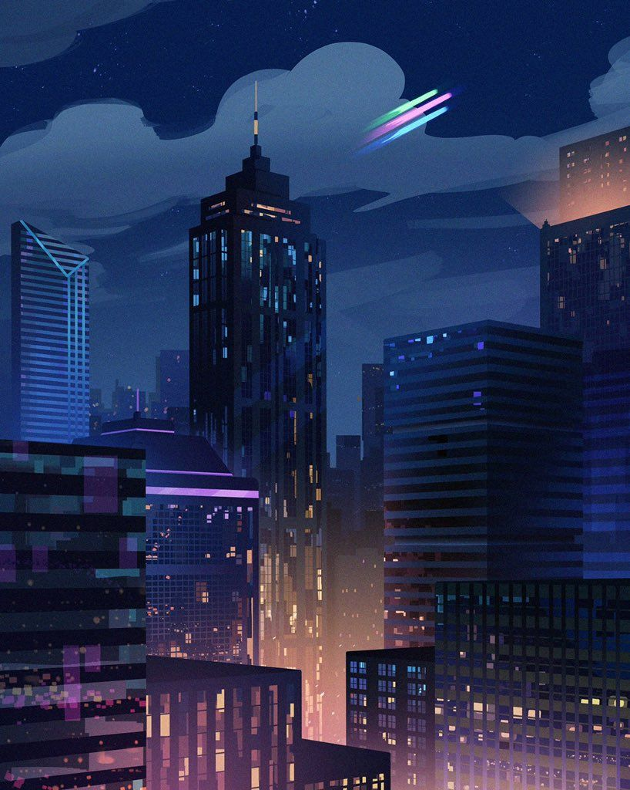

What it’s like being in love
 i remember once i was on a bus home. we stopped on the other side of the city, district 10 or something, because the bus needed to do some maintenance. when i got off, i looked at the sky and i just. i fell in love with the city all over again, it was a completely different skyline to the one i grew up loving, a completely different view of the same night sky. none of the stars were where they usually were and all these new ones were mesmerizing. it was home and adventure all at once, the achingly familiar but from such a startlingly beautiful perspective. being in love with her feels a lot like that. like falling in love with the world all over again. its feeling comfort beyond imagine as i drive past the city lights. its waking up early and watching apartment lights come alive. its going to a completely different country and walking into a g7 with the exact same layout as the one next to your house. the same city, the same apartments, the same layout, but in a context so utterly different that it makes you pause and stare. stare at the wonder and beauty you took for granted